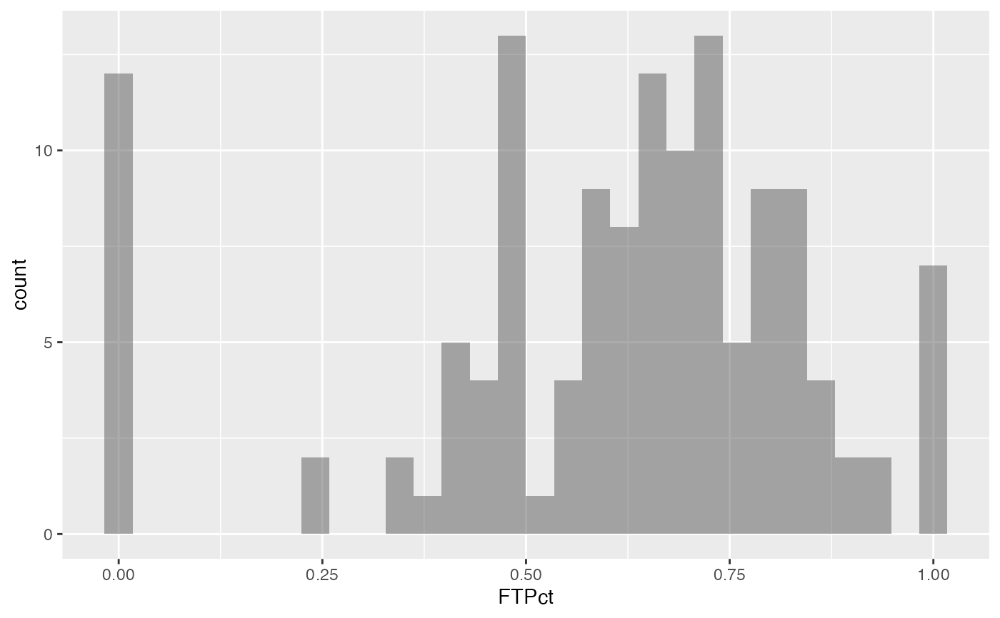

Individual player statistics for the 2004-2005 Michigan Intercollegiate Athletic Association basketball season.
Format
A data frame with 134 observations on the following 27 variables.
- number
jersey number
- player
player's name
- GP
games played
- GS
games started
- Min
minutes played
- AvgMin
average minutes played per game
- FG
field goals made
- FGA
field goals attempted
- FGPct
field goal percentage
- FG3
3-point field goals made
- FG3A
3-point field goals attempted
- FG3Pct
3-point field goal percentage
- FT
free throws made
- FTA
free throws attempted
- FTPct
free throw percentage
- Off
offensive rebounds
- Def
defensive rebounds
- Tot
total rebounds
- RBG
rebounds per game
- PF
personal fouls
- FO
games fouled out
- A
assists
- TO
turn overs
- Blk
blocked shots
- Stl
steals
- Pts
points scored
- PTSG
points per game
Source
MIAA sports archives (https://www.miaa.org/)
Examples
data(MIAA05)
#> Warning: data set ‘MIAA05’ not found
gf_histogram(~ FTPct, data = MIAA05)
